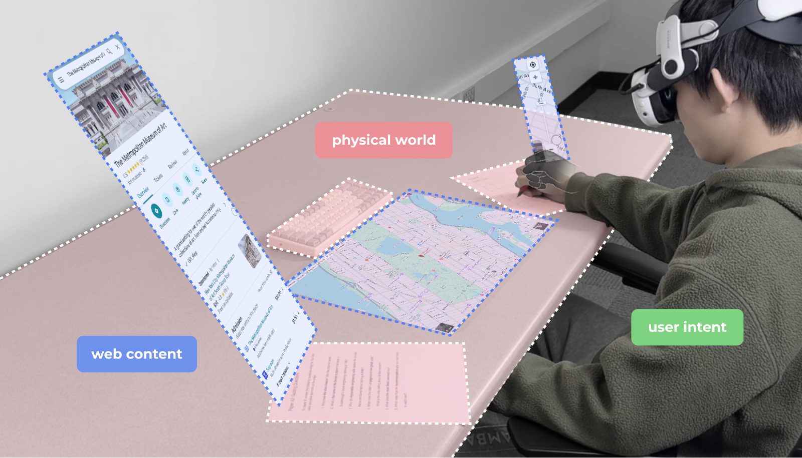
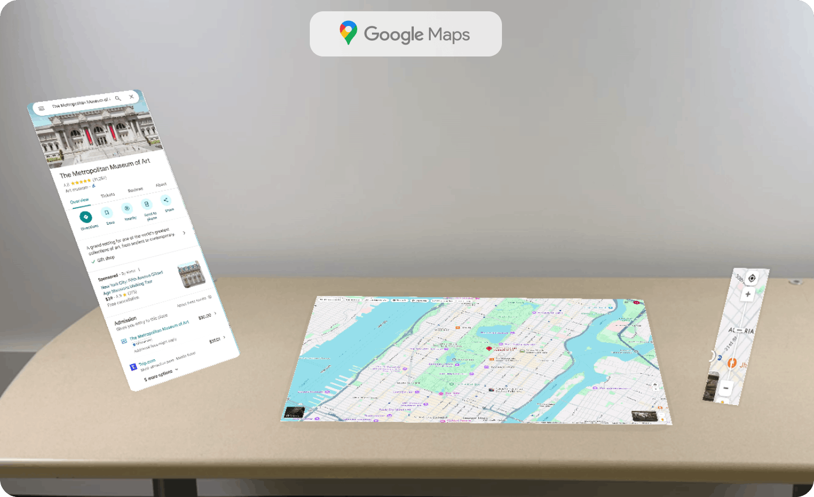
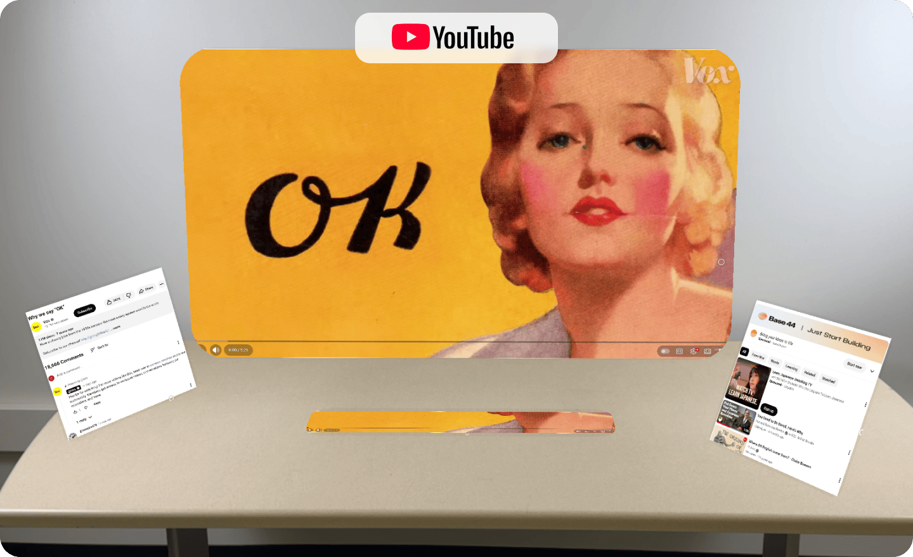
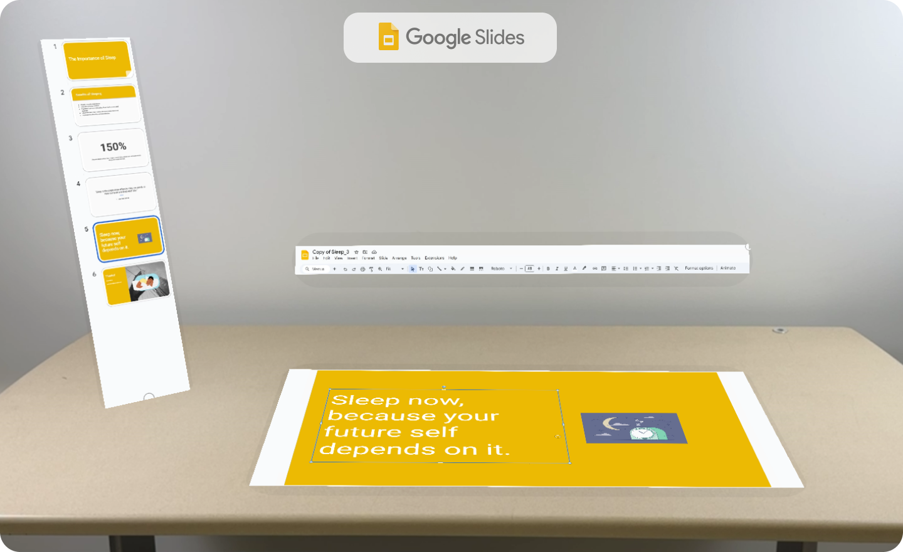
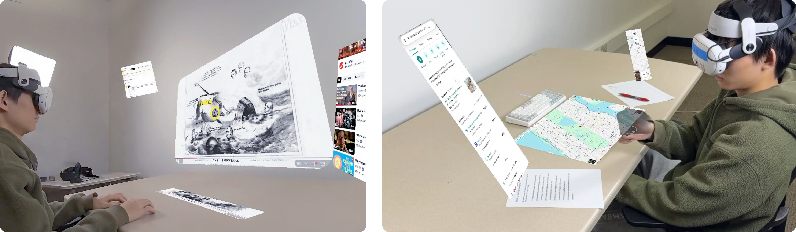
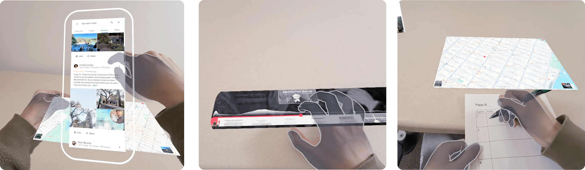
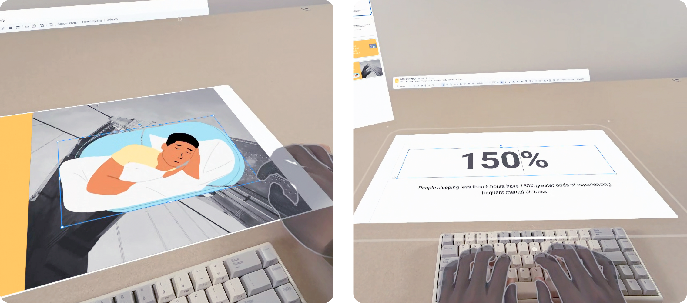

User Study

User study setup
User study demo video

Google Maps setup

YouTube setup

Slides setup
Findings

Figure 5-a
Finding 1: Attention and interaction become
distributed in space. While this allows for simultaneous
content viewing, it increases coordination costs and
physical fatigue due to the effort required to manage
distant or off-center panels.

Figure 5-bc
Finding 2: Space becomes a semantic substrate. Over
time, participants formed location-function bindings, using
spatial memory to retrieve information. However,
misplacement proved costly: panels that appeared too
near/far, or frequently moved disrupted expectations and led
to hesitation.

Figure 5-def
Finding 3: Physical anchoring both stabilizes and
complicates interaction. Anchoring virtual content to real
surfaces improved perceived control and precision.
Unfortunately, this introduced conflicts where virtual
panels occlude physical objects and writing gestures are
mistakenly interpreted as inputs.

Figure 5-gh
Finding 4: Immersion-driven engagement does not imply
productivity. BTW was widely described as novel and
engaging, particularly for exploratory and visual scenarios
such as browsing and media consumption. However,
participants did not consistently feel faster or more
efficient
Finding 5: Spatial web browsing lacks a shared UI
grammar. Across websites, participants improvised their own
layout rules but repeatedly noted the absence of conventions
(e.g., “no rule for where things should go”).